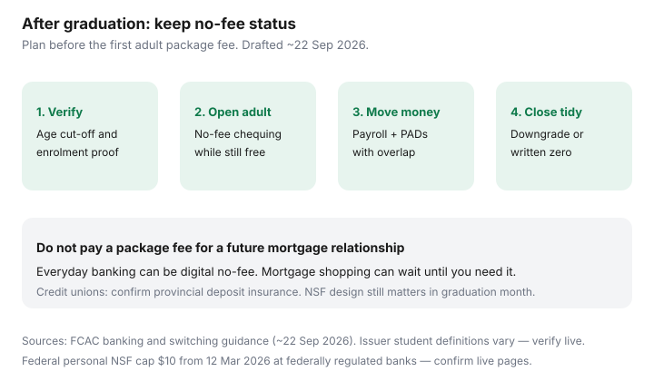

Personal Finance · Canada
Student and Recent-Grad Banking in Canada: Keep No-Fee Status After Graduation
Canadian student packages feel free until the month after convocation. Proof-of-enrolment lapses, an age cut-off hits, and a $12–$17 package appears on a statement grads still treat as “the school account.” The fix is a student-to-adult no-fee transition planned before the first fee posts — not a scramble after NSF risk shows up.
This guide is education for students and recent grads in Canada. Fee schedules and age rules change by issuer. Confirm the live package page. Framed for readers around 22 Sep 2026.
Disclosure: Banking and HISA accounts are offer types. Saving Optimizer may later add partner links. We do not currently claim bank partnerships. This is education, not deposit advice. Confirm student definitions, grace periods, and fees with the institution.
Key takeaways
- Know what ends when student status ends: monthly fee waiver, free Interac, and sometimes overdraft courtesy.
- Verify age cut-offs and proof-of-enrolment deadlines in writing — do not assume a grace period.
- Open an adult no-fee alternative before the first fee month.
- Move payroll and PADs with an overlap so graduation month does not create NSF.
- Credit unions can still win on fees and proximity — check provincial deposit insurance.
What ends when student status ends
Student chequing is usually a fee waiver plus a transaction bundle, not a permanent price. When status ends, the account often maps to a standard adult package. What commonly changes:
- Monthly package fee appears (or a minimum-balance waiver you will never keep).
- Interac e-Transfer limits or free-send counts shrink.
- Overdraft or courtesy coverage terms change.
- Linked student credit-card annual fees or insurance perks may also reset — separate product, same calendar risk.
Print or save the student package PDF in third year. The “what happens after school” paragraph is easy to miss in the app.
Grace periods and age cut-offs to verify at draft
Issuers differ. Some waive fees until a stated age (for example mid-20s) if you were a student; others end the waiver the month after full-time enrolment stops. A “grace period” in a marketing email is not a contract until it appears in the account agreement or a dated letter. Verify:
- Last date to upload enrolment proof.
- Whether graduation itself triggers the change or only the missed upload.
- Age cut-off independent of school status.
- Whether co-op or part-time study still qualifies.
Set a calendar alert 60 days before the earliest of: expected graduation, enrolment-proof expiry, or age cut-off.

No-fee adult alternatives before the first fee hits
Open the adult account while the student package is still free. Offer types include digital no-fee chequing (Simplii, Tangerine, and peers), some credit-union adult packages, and the FCAC low-cost account path at participating banks. Compare ATM networks, cash-deposit needs, and joint-account options. Pair with the no-fee stack and package-fee escape guides.
Do not “stay for the relationship” at $16.95 a month because you might want a mortgage in five years. Mortgage shopping does not require five years of package fees.
| Situation | Prefer | Watch |
|---|---|---|
| Need cash deposits weekly | Adult package with a real ATM/cash network | Digital banks that refuse cash deposits |
| Payroll + HISA parking | No-fee chequing + separate HISA member | Promo HISA that forces a paid chequing bundle |
| Still in town near a credit union | Ask for adult student-exit pricing | Provincial insurance logo vs CDIC |
| Parents still on the joint account | Split to an individual adult account | Fee waiver tied to the wrong holder |
Switch payroll and PAD without NSF risk
Graduation month is noisy: last OSAP deposit, damage-deposit return, first full-time pay. Use the same FCAC-style overlap as any switch: fund the new account, move payroll, run two billing cycles, then close or downgrade. Keep a float that covers the largest PAD. Federally regulated banks face a $10 NSF cap on personal deposit accounts from 12 March 2026 (FCAC/federal framing used with our NSF guide) — still expensive if it happens twice, and credit unions may differ. Details in stop NSF and overdraft fees and 14-day switch.
When a credit union student account still wins
If the adult credit-union package stays near $0, the branch is where you deposit cash tips, and provincial deposit insurance covers your balances, staying can beat a digital bank you will never fund. Read the insurance logo (FSRA, DGCM, and peers — not always CDIC). Re-check fees annually; “youth” pricing is not forever.
Graduation banking transition checklist
- □ Student package PDF saved; cut-off and proof dates written.
- □ Adult no-fee account open and funded before the fee month.
- □ Payroll and top PADs rewritten with a one- to two-cycle overlap.
- □ Student overdraft or linked cards reviewed the same week.
- □ Old account closed or downgraded to a written $0 package — not abandoned.
- □ Emergency float labelled in a HISA if first-job income is uneven.
Sources & date stamps
- FCAC — banking packages, switching institutions, and NSF consumer information (used ~22 Sep 2026).
- Federal NSF fee cap on personal deposit accounts at federally regulated banks — $10 from 12 March 2026 (confirm live FCAC/government pages).
- FCAC low-cost account commitment framing (in force from 1 Dec 2025; verify participating institutions).
- Issuer student-package pages — age and enrolment definitions change; always confirm live.
Frequently asked questions
When do Canadian student accounts usually lose no-fee status?
When the bank’s definition of ‘student’ ends — often after you leave full-time studies, hit an age cut-off, or miss an annual proof-of-enrolment upload. Dates are issuer-specific. Check the package page and any graduation email before the first fee posts.
Is there a grace period after graduation?
Some issuers advertise a short grace window; many do not. Treat grace as unverified until you see it in writing. Plan the adult no-fee account before the last enrolment proof expires.
Should grads keep a Big-5 account for a mortgage later?
You can open a mortgage relationship later without paying a package fee for five years. Everyday banking can sit in a no-fee digital account while a tiny or closed Big-5 leftover is optional — not mandatory.
What about joint accounts with parents?
Student packages on a joint account may still flip to adult pricing when the student holder ages out. Review whose SIN and status the fee waiver sits on.
Do credit union student accounts help after graduation?
Sometimes membership and youth pricing last longer, or adult packages stay cheap. Confirm provincial deposit insurance and ATM access the same way you would for a bank.